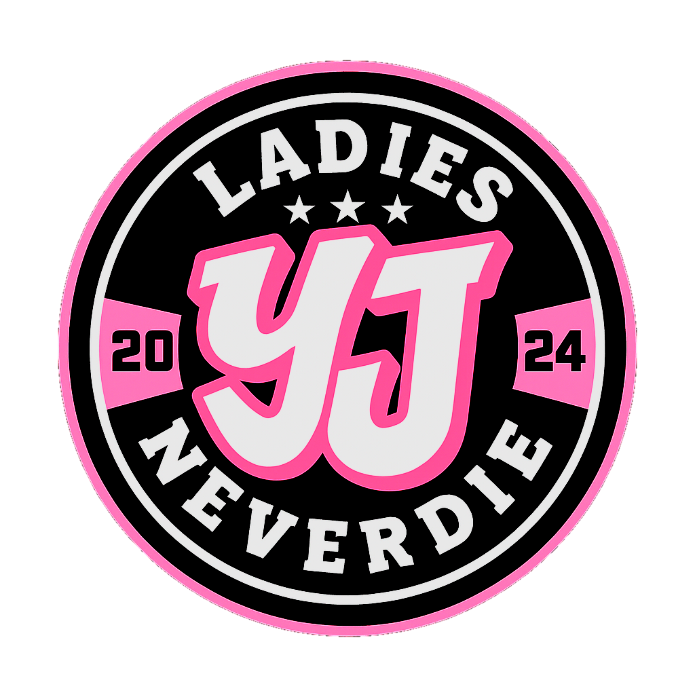
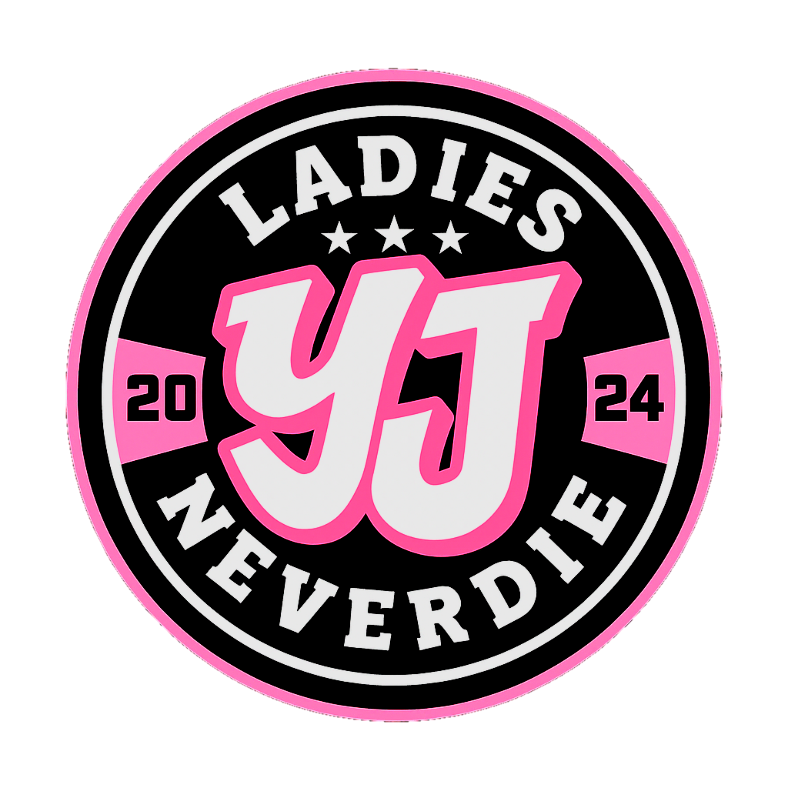

WELCOME TO CIRCLE YEJE
GB OPTES 🔼
our story
CIRCLE YEJE terbentuk pada tanggal 19 Februari 2024 oleh dua pendiri awal, Fiwww dan Oxaa, yang memiliki tujuan membangun komunitas bagi para pemain Free Fire, khususnya di mode Clash Squad Custom atau yang kini dikenal sebagai Elite CS. Berawal dari hobi bermain dan semangat kebersamaan, circle ini tumbuh menjadi wadah bagi para pemain yang ingin mengasah kemampuan, berbagi pengalaman, dan membangun kekompakan dalam tim.
Seiring berjalannya waktu, Wira turut bergabung sebagai pendiri, memperkuat fondasi serta arah komunitas ini. Dengan semangat sportivitas dan solidaritas, CIRCLE YEJE terus berkembang menjadi komunitas yang tidak hanya fokus pada permainan, tetapi juga menjalin hubungan erat antar anggotanya di luar game.
all memories in here


 
